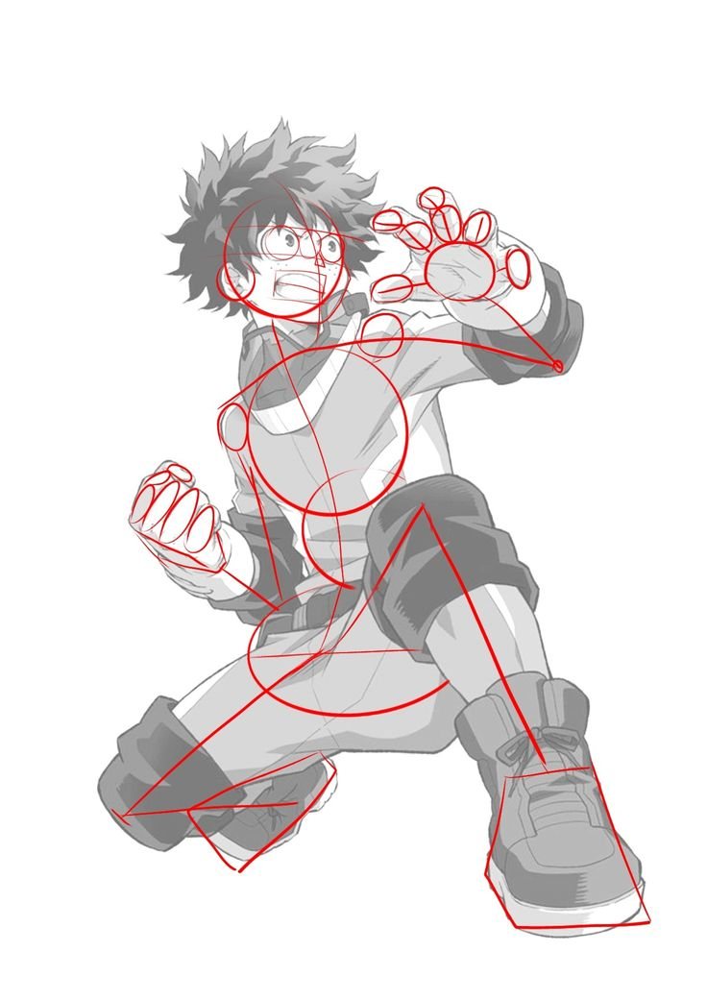
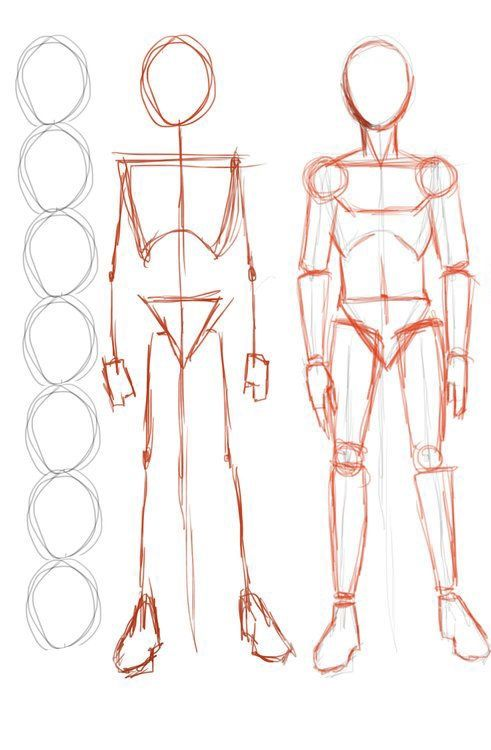
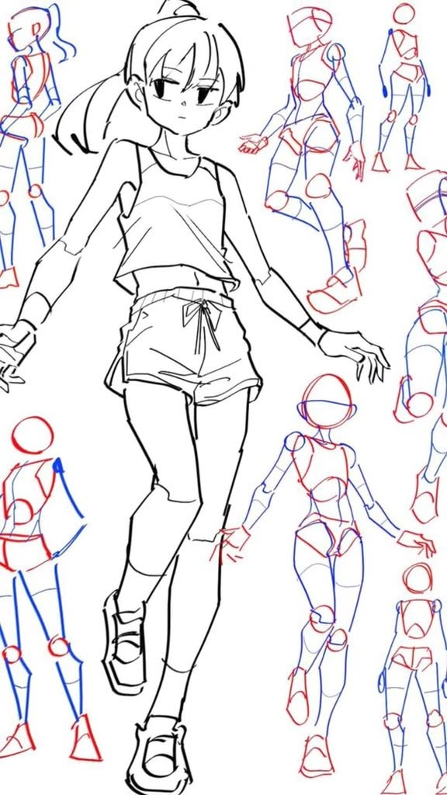
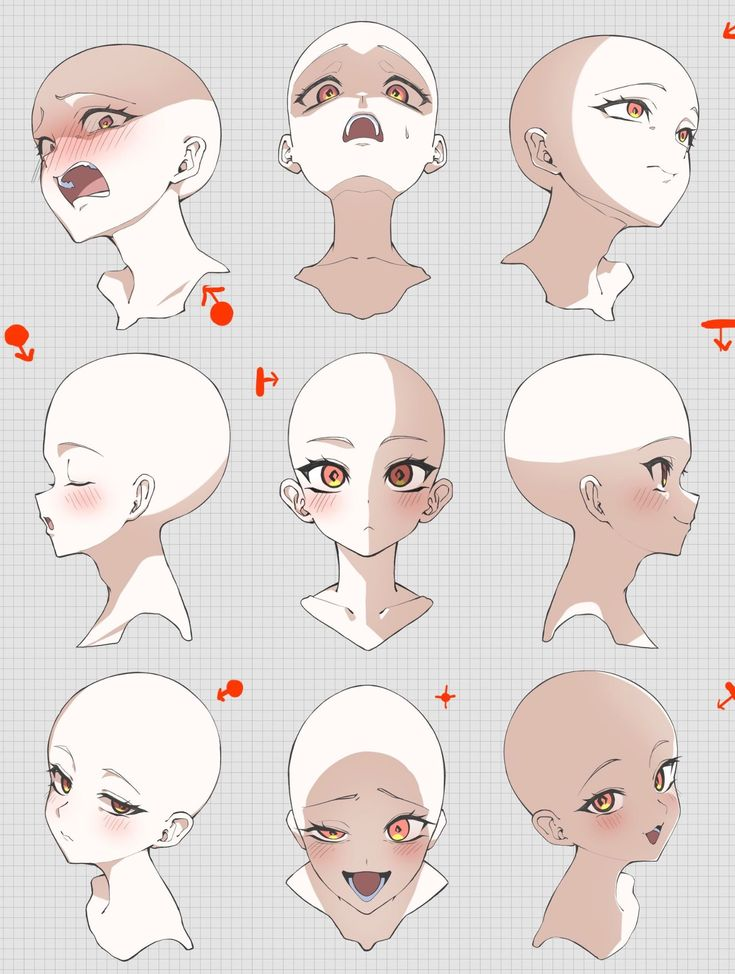
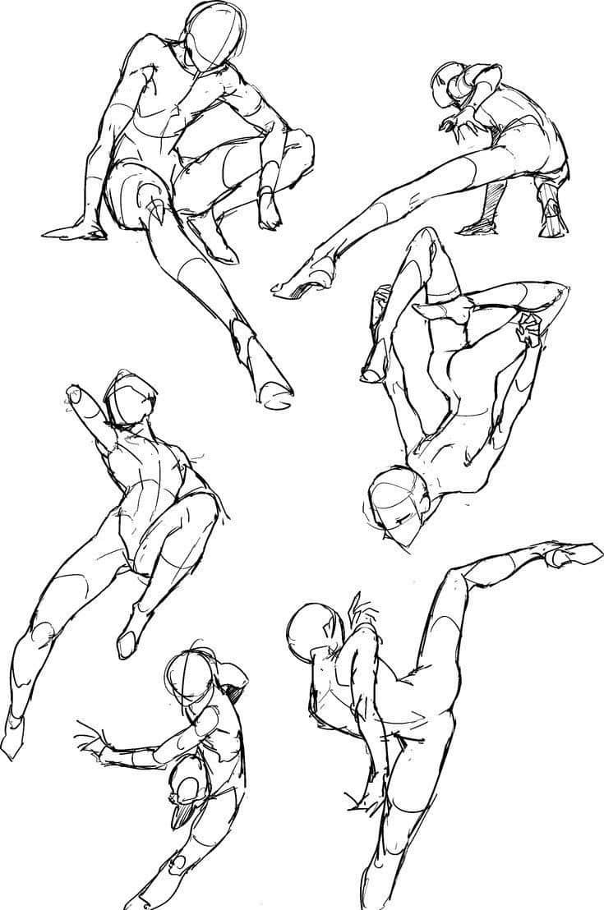
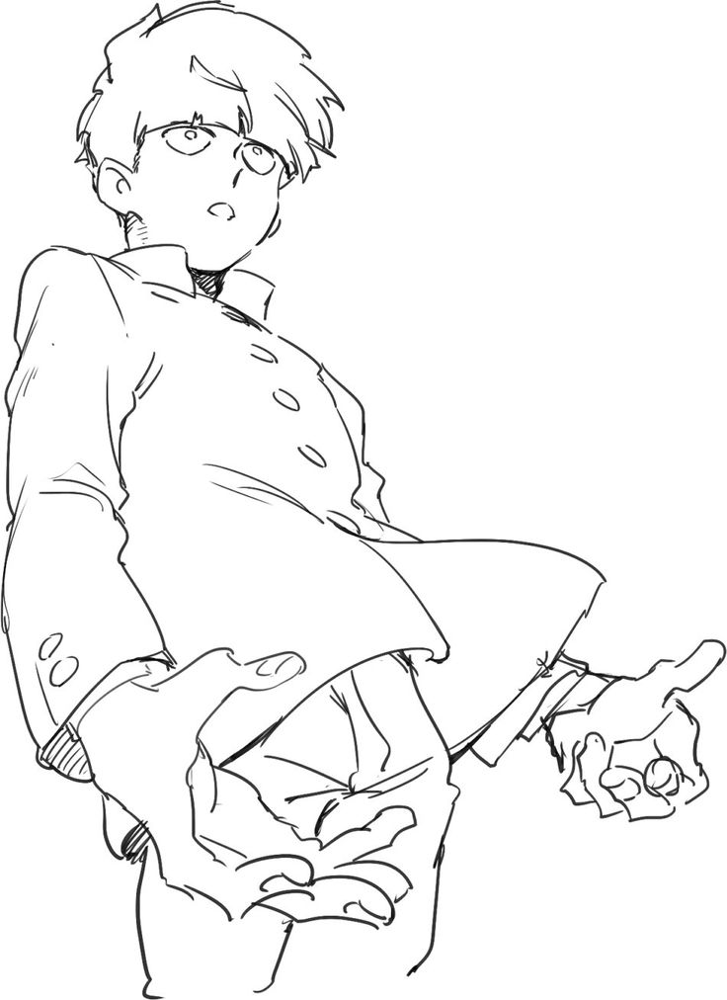

Creating Anime Poses Step-by-Step
If you want to bring your characters to life, you need to learn how to draw poses. Follow these steps to improve proportions, movement, and expression. Remember, these steps are guidelines on how to develop an understanding of proportions in the action pose or position you want your character.
Step 1: Start with Gesture Lines
Begin by drawing a simple gesture line to represent the movement of the body. This line shows the flow and positioning of the pose. Keep it loose and avoid focusing on details at this stage with light strokes. You want a sketch skeleton outline of the pose you've chosen for your character.

Image by andrewmantelli (Pinterest)
Step 2: Build Basic Shapes
From here, turn your stick figure into simple shapes like circles and rectangles to form the head, torso, arms, and legs. This helps establish the structure and proportions of the pose. The key is to understand that everything has direction. The ribs and pelvis should have different angles, and cylinders should show the direction they're pointing.

Image by mdinglydongly (Pinterest)
Step 3: Check Proportions
Anime characters usually follow a proportion system, such as 6-8 heads tall. Make sure the limbs are correctly sized and the body looks balanced. Do that by using alignment checks, vertical and horizontal lines that you use to measure if knees and elbows line up naturally, or if the head is too big or small for the body.
Image by mdinglydongly (Pinterest)
Step 4: Add Form and Details
Add the important parts, such as muscle structure, clothing, and facial features, all on top of your shapes. Keep the pose natural and avoid stiffness.

Image by davipontes938 (Pinterest)
Step 5: Express Emotion Through Pose
The way a character moves in action or standing can express emotion/ personality. For example, an upright stance can show confidence, while high shoulder placement can show confusion.

Image by elle_c_ (Pinterest)
Step 6: Create Action Poses
For action scenes, the use of exaggeration in posing and the use of unique angles can showcase a certain action. You can curve lines and stretch limbs to help create a sense of motion in the character's pose. This can showcase the action of falling, leaning on a desk, a soccer kick, or even a dancer.

Image by skyrye_design (Pinterest)
Step 7: Final Line Work
Finally, clean up your sketch with smooth and confident lines. Remove unnecessary guidelines and prepare your drawing for coloring and shading.

Image by N/A (Pinterest)